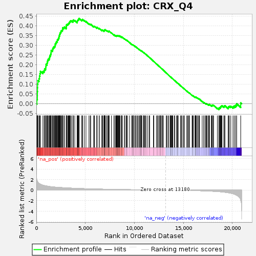

| | | Dataset | GSE18198_cov_collapsed |
| Phenotype | NoPhenotypeAvailable |
| Upregulated in class | na_pos |
| GeneSet | CRX_Q4 |
| Enrichment Score (ES) | 0.43766305 |
| Normalized Enrichment Score (NES) | 1.5757922 |
| Nominal p-value | 0.0 |
| FDR q-value | 0.079400875 |
| FWER p-Value | 0.693 |
Table: GSEA Results Summary

Fig 1: Enrichment plot: CRX_Q4
Profile of the Running ES Score & Positions of GeneSet Members on the Rank Ordered List
| SYMBOL | TITLE | RANK IN GENE LIST | RANK METRIC SCORE | RUNNING ES | CORE ENRICHMENT | | 1 | CDKN2C | NA | 56 | 1.978 | 0.0219 | Yes |
| 2 | CPEB4 | NA | 101 | 1.713 | 0.0411 | Yes |
| 3 | PGF | NA | 105 | 1.687 | 0.0619 | Yes |
| 4 | RALGPS2 | NA | 116 | 1.643 | 0.0819 | Yes |
| 5 | PURA | NA | 124 | 1.618 | 0.1016 | Yes |
| 6 | BTG4 | NA | 154 | 1.528 | 0.1192 | Yes |
| 7 | ANXA11 | NA | 272 | 1.275 | 0.1294 | Yes |
| 8 | NRXN3 | NA | 320 | 1.216 | 0.1423 | Yes |
| 9 | USP34 | NA | 367 | 1.175 | 0.1547 | Yes |
| 10 | SYNE1 | NA | 411 | 1.132 | 0.1667 | Yes |
| 11 | CHD2 | NA | 668 | 0.934 | 0.1659 | Yes |
| 12 | MED13 | NA | 796 | 0.875 | 0.1707 | Yes |
| 13 | DNAI4 | NA | 844 | 0.855 | 0.1790 | Yes |
| 14 | HRK | NA | 950 | 0.817 | 0.1841 | Yes |
| 15 | ERG | NA | 976 | 0.810 | 0.1930 | Yes |
| 16 | FZD4 | NA | 986 | 0.805 | 0.2025 | Yes |
| 17 | POLD4 | NA | 1093 | 0.769 | 0.2070 | Yes |
| 18 | ECHDC2 | NA | 1111 | 0.763 | 0.2156 | Yes |
| 19 | ERBB4 | NA | 1151 | 0.750 | 0.2231 | Yes |
| 20 | MIER1 | NA | 1212 | 0.729 | 0.2292 | Yes |
| 21 | NOTCH2NLA | NA | 1311 | 0.702 | 0.2332 | Yes |
| 22 | SOGA1 | NA | 1352 | 0.691 | 0.2399 | Yes |
| 23 | FIBCD1 | NA | 1382 | 0.682 | 0.2470 | Yes |
| 24 | SATB1 | NA | 1449 | 0.663 | 0.2520 | Yes |
| 25 | H4C3 | NA | 1487 | 0.656 | 0.2584 | Yes |
| 26 | ZBTB20 | NA | 1505 | 0.652 | 0.2657 | Yes |
| 27 | FRMPD2 | NA | 1512 | 0.650 | 0.2735 | Yes |
| 28 | SAMD11 | NA | 1642 | 0.623 | 0.2750 | Yes |
| 29 | PAX6 | NA | 1668 | 0.617 | 0.2815 | Yes |
| 30 | GPBP1 | NA | 1714 | 0.607 | 0.2868 | Yes |
| 31 | NOS1 | NA | 1772 | 0.594 | 0.2915 | Yes |
| 32 | CNOT4 | NA | 1860 | 0.578 | 0.2944 | Yes |
| 33 | TNFSF11 | NA | 1915 | 0.570 | 0.2989 | Yes |
| 34 | INTS12 | NA | 1918 | 0.570 | 0.3059 | Yes |
| 35 | CYTH2 | NA | 1983 | 0.559 | 0.3098 | Yes |
| 36 | WNT6 | NA | 2014 | 0.554 | 0.3152 | Yes |
| 37 | KRT4 | NA | 2073 | 0.546 | 0.3192 | Yes |
| 38 | TLE4 | NA | 2140 | 0.538 | 0.3227 | Yes |
| 39 | RTN2 | NA | 2144 | 0.537 | 0.3292 | Yes |
| 40 | LDB2 | NA | 2227 | 0.528 | 0.3318 | Yes |
| 41 | ITPRID1 | NA | 2264 | 0.523 | 0.3366 | Yes |
| 42 | CREB5 | NA | 2305 | 0.517 | 0.3411 | Yes |
| 43 | SOX15 | NA | 2313 | 0.516 | 0.3472 | Yes |
| 44 | NCOA2 | NA | 2361 | 0.510 | 0.3512 | Yes |
| 45 | RIMS1 | NA | 2385 | 0.507 | 0.3564 | Yes |
| 46 | EFHB | NA | 2415 | 0.503 | 0.3613 | Yes |
| 47 | CTBP2 | NA | 2450 | 0.499 | 0.3658 | Yes |
| 48 | HOXA3 | NA | 2509 | 0.491 | 0.3691 | Yes |
| 49 | HOXD10 | NA | 2533 | 0.487 | 0.3741 | Yes |
| 50 | ENTPD1 | NA | 2612 | 0.477 | 0.3762 | Yes |
| 51 | ID2 | NA | 2668 | 0.469 | 0.3794 | Yes |
| 52 | GRIN2B | NA | 2679 | 0.468 | 0.3848 | Yes |
| 53 | CNTLN | NA | 2691 | 0.468 | 0.3900 | Yes |
| 54 | LTBP1 | NA | 2814 | 0.453 | 0.3898 | Yes |
| 55 | CFB | NA | 2856 | 0.448 | 0.3934 | Yes |
| 56 | NR6A1 | NA | 3045 | 0.433 | 0.3897 | Yes |
| 57 | CRYGS | NA | 3052 | 0.432 | 0.3947 | Yes |
| 58 | UBXN10 | NA | 3061 | 0.431 | 0.3997 | Yes |
| 59 | SARNP | NA | 3068 | 0.430 | 0.4048 | Yes |
| 60 | ACKR3 | NA | 3126 | 0.422 | 0.4073 | Yes |
| 61 | LIFR | NA | 3219 | 0.413 | 0.4080 | Yes |
| 62 | H1-2 | NA | 3271 | 0.408 | 0.4106 | Yes |
| 63 | AMMECR1 | NA | 3312 | 0.404 | 0.4137 | Yes |
| 64 | SLC6A5 | NA | 3372 | 0.398 | 0.4158 | Yes |
| 65 | NR1H4 | NA | 3398 | 0.396 | 0.4195 | Yes |
| 66 | BTRC | NA | 3439 | 0.390 | 0.4224 | Yes |
| 67 | PDE4D | NA | 3486 | 0.386 | 0.4250 | Yes |
| 68 | CAMK2A | NA | 3592 | 0.375 | 0.4246 | Yes |
| 69 | LRRTM4 | NA | 3736 | 0.366 | 0.4222 | Yes |
| 70 | TMEM126B | NA | 3740 | 0.366 | 0.4266 | Yes |
| 71 | MEIS1 | NA | 3772 | 0.364 | 0.4296 | Yes |
| 72 | ATRNL1 | NA | 3920 | 0.350 | 0.4269 | Yes |
| 73 | LLGL2 | NA | 4173 | 0.329 | 0.4188 | Yes |
| 74 | ARHGAP35 | NA | 4174 | 0.329 | 0.4229 | Yes |
| 75 | TSC22D1 | NA | 4191 | 0.328 | 0.4262 | Yes |
| 76 | GNB3 | NA | 4224 | 0.325 | 0.4287 | Yes |
| 77 | ADGRL2 | NA | 4267 | 0.321 | 0.4306 | Yes |
| 78 | JMJD1C | NA | 4329 | 0.317 | 0.4316 | Yes |
| 79 | AKIRIN2 | NA | 4331 | 0.317 | 0.4355 | Yes |
| 80 | FNDC9 | NA | 4368 | 0.313 | 0.4377 | Yes |
| 81 | MYO3B | NA | 4640 | 0.294 | 0.4282 | No |
| 82 | LIN28A | NA | 4681 | 0.292 | 0.4299 | No |
| 83 | GPR21 | NA | 4706 | 0.291 | 0.4324 | No |
| 84 | HOXC6 | NA | 4886 | 0.278 | 0.4272 | No |
| 85 | PRRX1 | NA | 5061 | 0.267 | 0.4221 | No |
| 86 | TCF7L2 | NA | 5368 | 0.250 | 0.4104 | No |
| 87 | HOXB3 | NA | 5495 | 0.244 | 0.4073 | No |
| 88 | EGFLAM | NA | 5546 | 0.240 | 0.4079 | No |
| 89 | SPTSSB | NA | 5849 | 0.224 | 0.3961 | No |
| 90 | DALRD3 | NA | 5904 | 0.221 | 0.3962 | No |
| 91 | ETV5 | NA | 5938 | 0.219 | 0.3974 | No |
| 92 | MCTP2 | NA | 6165 | 0.208 | 0.3890 | No |
| 93 | GAP43 | NA | 6185 | 0.208 | 0.3907 | No |
| 94 | GSTCD | NA | 6201 | 0.207 | 0.3925 | No |
| 95 | GJD2 | NA | 6408 | 0.197 | 0.3850 | No |
| 96 | BHLHE22 | NA | 6418 | 0.196 | 0.3870 | No |
| 97 | BNC2 | NA | 6680 | 0.184 | 0.3767 | No |
| 98 | NIPBL | NA | 6724 | 0.183 | 0.3769 | No |
| 99 | SRPK2 | NA | 6753 | 0.182 | 0.3778 | No |
| 100 | ANGPTL2 | NA | 6895 | 0.176 | 0.3732 | No |
| 101 | ESRRG | NA | 6899 | 0.176 | 0.3752 | No |
| 102 | SLC1A7 | NA | 6948 | 0.174 | 0.3750 | No |
| 103 | HOXC5 | NA | 6960 | 0.174 | 0.3767 | No |
| 104 | ZFP36L2 | NA | 6965 | 0.173 | 0.3786 | No |
| 105 | B3GALT5-AS1 | NA | 6994 | 0.172 | 0.3794 | No |
| 106 | GRID2 | NA | 7030 | 0.171 | 0.3798 | No |
| 107 | DIP2B | NA | 7154 | 0.166 | 0.3760 | No |
| 108 | DLC1 | NA | 7249 | 0.162 | 0.3734 | No |
| 109 | NR2F1 | NA | 7343 | 0.159 | 0.3709 | No |
| 110 | CASK | NA | 7397 | 0.157 | 0.3703 | No |
| 111 | STAT5B | NA | 7403 | 0.157 | 0.3720 | No |
| 112 | RBM39 | NA | 7425 | 0.156 | 0.3729 | No |
| 113 | DPYD | NA | 7657 | 0.147 | 0.3636 | No |
| 114 | MBD6 | NA | 7930 | 0.137 | 0.3521 | No |
| 115 | PCSK1 | NA | 7937 | 0.136 | 0.3535 | No |
| 116 | DMPK | NA | 8088 | 0.131 | 0.3479 | No |
| 117 | EYA4 | NA | 8117 | 0.130 | 0.3482 | No |
| 118 | SSBP2 | NA | 8181 | 0.128 | 0.3467 | No |
| 119 | C6orf62 | NA | 8184 | 0.128 | 0.3482 | No |
| 120 | SLC5A2 | NA | 8217 | 0.127 | 0.3483 | No |
| 121 | MAB21L1 | NA | 8257 | 0.125 | 0.3479 | No |
| 122 | TENM3-AS1 | NA | 8269 | 0.125 | 0.3489 | No |
| 123 | DMD | NA | 8296 | 0.124 | 0.3492 | No |
| 124 | TNNT1 | NA | 8351 | 0.121 | 0.3481 | No |
| 125 | MDGA1 | NA | 8386 | 0.120 | 0.3480 | No |
| 126 | VXN | NA | 8454 | 0.118 | 0.3462 | No |
| 127 | FGF7 | NA | 8458 | 0.118 | 0.3475 | No |
| 128 | HR | NA | 8469 | 0.117 | 0.3485 | No |
| 129 | NEO1 | NA | 8537 | 0.116 | 0.3467 | No |
| 130 | SLC6A20 | NA | 8676 | 0.112 | 0.3414 | No |
| 131 | PPM1N | NA | 8684 | 0.111 | 0.3424 | No |
| 132 | ZBTB18 | NA | 8708 | 0.111 | 0.3427 | No |
| 133 | MAML3 | NA | 8778 | 0.109 | 0.3407 | No |
| 134 | TULP1 | NA | 8991 | 0.102 | 0.3317 | No |
| 135 | RORA | NA | 9003 | 0.101 | 0.3325 | No |
| 136 | PITX2 | NA | 9154 | 0.097 | 0.3264 | No |
| 137 | KCNA1 | NA | 9166 | 0.097 | 0.3271 | No |
| 138 | MTMR10 | NA | 9211 | 0.096 | 0.3262 | No |
| 139 | PCDHGC3 | NA | 9308 | 0.093 | 0.3227 | No |
| 140 | UBAP2L | NA | 9514 | 0.087 | 0.3139 | No |
| 141 | HNF1A | NA | 9737 | 0.080 | 0.3041 | No |
| 142 | NLGN1 | NA | 9785 | 0.079 | 0.3028 | No |
| 143 | FGF14 | NA | 9804 | 0.079 | 0.3029 | No |
| 144 | FOXA1 | NA | 9891 | 0.076 | 0.2997 | No |
| 145 | IGSF3 | NA | 9898 | 0.076 | 0.3004 | No |
| 146 | MN1 | NA | 9911 | 0.075 | 0.3007 | No |
| 147 | LRIT1 | NA | 10021 | 0.072 | 0.2964 | No |
| 148 | SATB2 | NA | 10134 | 0.069 | 0.2918 | No |
| 149 | CLASP1 | NA | 10149 | 0.069 | 0.2920 | No |
| 150 | CACNA2D4 | NA | 10279 | 0.065 | 0.2866 | No |
| 151 | CHORDC1 | NA | 10347 | 0.063 | 0.2841 | No |
| 152 | SLITRK1 | NA | 10464 | 0.060 | 0.2792 | No |
| 153 | POU6F2 | NA | 10538 | 0.058 | 0.2764 | No |
| 154 | KRT24 | NA | 10633 | 0.056 | 0.2726 | No |
| 155 | DLG4 | NA | 10641 | 0.055 | 0.2729 | No |
| 156 | PTMS | NA | 10649 | 0.055 | 0.2733 | No |
| 157 | RAX | NA | 10661 | 0.055 | 0.2734 | No |
| 158 | POLR2A | NA | 10731 | 0.053 | 0.2707 | No |
| 159 | KCNH2 | NA | 10757 | 0.052 | 0.2702 | No |
| 160 | ATP1B3 | NA | 10925 | 0.048 | 0.2627 | No |
| 161 | PAX7 | NA | 10937 | 0.047 | 0.2628 | No |
| 162 | TYRP1 | NA | 10968 | 0.046 | 0.2619 | No |
| 163 | LMO3 | NA | 11063 | 0.044 | 0.2579 | No |
| 164 | CKMT1B | NA | 11092 | 0.043 | 0.2571 | No |
| 165 | KRT3 | NA | 11183 | 0.042 | 0.2532 | No |
| 166 | GUCY2F | NA | 11333 | 0.038 | 0.2465 | No |
| 167 | HOXC4 | NA | 11502 | 0.034 | 0.2388 | No |
| 168 | MSX2 | NA | 11563 | 0.032 | 0.2363 | No |
| 169 | DSG4 | NA | 11952 | 0.024 | 0.2178 | No |
| 170 | DCTN1 | NA | 11975 | 0.024 | 0.2171 | No |
| 171 | ABCC6 | NA | 11986 | 0.024 | 0.2169 | No |
| 172 | CLUH | NA | 12248 | 0.019 | 0.2045 | No |
| 173 | NKX6-1 | NA | 12353 | 0.017 | 0.1997 | No |
| 174 | RPRML | NA | 12373 | 0.017 | 0.1990 | No |
| 175 | TCF7 | NA | 12486 | 0.014 | 0.1937 | No |
| 176 | FOXB1 | NA | 12596 | 0.012 | 0.1886 | No |
| 177 | C12orf50 | NA | 12622 | 0.011 | 0.1875 | No |
| 178 | KCNIP2 | NA | 12643 | 0.011 | 0.1867 | No |
| 179 | TNFSF4 | NA | 12674 | 0.010 | 0.1854 | No |
| 180 | CLMP | NA | 12794 | 0.008 | 0.1797 | No |
| 181 | TRMT10A | NA | 12855 | 0.007 | 0.1769 | No |
| 182 | MERTK | NA | 12858 | 0.006 | 0.1769 | No |
| 183 | NFIX | NA | 12971 | 0.004 | 0.1715 | No |
| 184 | LEMD1 | NA | 13257 | -0.001 | 0.1578 | No |
| 185 | CDK2AP2 | NA | 13292 | -0.002 | 0.1561 | No |
| 186 | BMI1 | NA | 13417 | -0.004 | 0.1502 | No |
| 187 | JARID2 | NA | 13514 | -0.006 | 0.1456 | No |
| 188 | ROBO3 | NA | 13656 | -0.010 | 0.1389 | No |
| 189 | EFS | NA | 13669 | -0.010 | 0.1385 | No |
| 190 | ESM1 | NA | 13696 | -0.011 | 0.1374 | No |
| 191 | FLRT1 | NA | 13732 | -0.011 | 0.1358 | No |
| 192 | FAM122A | NA | 13778 | -0.012 | 0.1338 | No |
| 193 | BDKRB1 | NA | 13804 | -0.012 | 0.1327 | No |
| 194 | TMUB2 | NA | 13876 | -0.014 | 0.1295 | No |
| 195 | DMRT2 | NA | 13916 | -0.015 | 0.1278 | No |
| 196 | VASP | NA | 13930 | -0.015 | 0.1273 | No |
| 197 | CYP2F1 | NA | 14082 | -0.019 | 0.1203 | No |
| 198 | ADAMTSL1 | NA | 14114 | -0.019 | 0.1190 | No |
| 199 | PITX1 | NA | 14292 | -0.023 | 0.1107 | No |
| 200 | ZNF384 | NA | 14381 | -0.024 | 0.1068 | No |
| 201 | EGFL6 | NA | 14417 | -0.025 | 0.1054 | No |
| 202 | ZBTB4 | NA | 14420 | -0.025 | 0.1056 | No |
| 203 | NR2E1 | NA | 14469 | -0.027 | 0.1036 | No |
| 204 | SST | NA | 14715 | -0.032 | 0.0922 | No |
| 205 | FOXG1 | NA | 14786 | -0.033 | 0.0892 | No |
| 206 | HOATZ | NA | 14840 | -0.035 | 0.0871 | No |
| 207 | PRDM13 | NA | 14981 | -0.041 | 0.0808 | No |
| 208 | HMGN2 | NA | 15069 | -0.043 | 0.0771 | No |
| 209 | C10orf71 | NA | 15091 | -0.044 | 0.0767 | No |
| 210 | TLX3 | NA | 15341 | -0.053 | 0.0653 | No |
| 211 | MEOX2 | NA | 15448 | -0.057 | 0.0609 | No |
| 212 | FLNC | NA | 15501 | -0.058 | 0.0591 | No |
| 213 | TMEM35A | NA | 15600 | -0.064 | 0.0551 | No |
| 214 | SLC13A4 | NA | 15617 | -0.064 | 0.0551 | No |
| 215 | DAP | NA | 15891 | -0.077 | 0.0429 | No |
| 216 | AJUBA | NA | 15930 | -0.079 | 0.0420 | No |
| 217 | NOL4L | NA | 15950 | -0.080 | 0.0421 | No |
| 218 | GUCY2D | NA | 16019 | -0.082 | 0.0399 | No |
| 219 | ZPBP2 | NA | 16185 | -0.090 | 0.0330 | No |
| 220 | TRIML1 | NA | 16204 | -0.090 | 0.0333 | No |
| 221 | NAA60 | NA | 16247 | -0.093 | 0.0324 | No |
| 222 | PNPLA3 | NA | 16265 | -0.094 | 0.0327 | No |
| 223 | AGA | NA | 16267 | -0.094 | 0.0338 | No |
| 224 | PRKAG1 | NA | 16301 | -0.095 | 0.0334 | No |
| 225 | ABI3BP | NA | 16409 | -0.100 | 0.0295 | No |
| 226 | ZNF281 | NA | 16427 | -0.100 | 0.0299 | No |
| 227 | TIGD2 | NA | 16566 | -0.107 | 0.0246 | No |
| 228 | KHSRP | NA | 16579 | -0.108 | 0.0253 | No |
| 229 | ACAA2 | NA | 16643 | -0.112 | 0.0237 | No |
| 230 | SLC12A5 | NA | 16922 | -0.127 | 0.0118 | No |
| 231 | TRIP10 | NA | 17090 | -0.138 | 0.0055 | No |
| 232 | CLDN2 | NA | 17115 | -0.140 | 0.0060 | No |
| 233 | ZNF385A | NA | 17261 | -0.151 | 0.0009 | No |
| 234 | MOAP1 | NA | 17298 | -0.155 | 0.0011 | No |
| 235 | MOCOS | NA | 17379 | -0.160 | -0.0008 | No |
| 236 | RUNX3 | NA | 17431 | -0.164 | -0.0012 | No |
| 237 | E2F3 | NA | 17565 | -0.175 | -0.0055 | No |
| 238 | MIP | NA | 17597 | -0.178 | -0.0047 | No |
| 239 | BCL11A | NA | 17643 | -0.181 | -0.0047 | No |
| 240 | GLRA1 | NA | 17658 | -0.182 | -0.0031 | No |
| 241 | NOTCH2 | NA | 17854 | -0.202 | -0.0100 | No |
| 242 | MEPCE | NA | 17912 | -0.206 | -0.0102 | No |
| 243 | CYRIB | NA | 17924 | -0.207 | -0.0082 | No |
| 244 | TKT | NA | 17946 | -0.209 | -0.0066 | No |
| 245 | CARTPT | NA | 18041 | -0.220 | -0.0084 | No |
| 246 | PROK2 | NA | 18084 | -0.224 | -0.0076 | No |
| 247 | DEF6 | NA | 18469 | -0.269 | -0.0228 | No |
| 248 | IRX5 | NA | 18621 | -0.292 | -0.0265 | No |
| 249 | C5 | NA | 18647 | -0.295 | -0.0240 | No |
| 250 | RPA3 | NA | 18655 | -0.296 | -0.0207 | No |
| 251 | AMHR2 | NA | 18743 | -0.309 | -0.0211 | No |
| 252 | AMER1 | NA | 18790 | -0.316 | -0.0194 | No |
| 253 | MSH5 | NA | 18801 | -0.317 | -0.0159 | No |
| 254 | ETS2 | NA | 18837 | -0.327 | -0.0135 | No |
| 255 | LINC01565 | NA | 18883 | -0.334 | -0.0116 | No |
| 256 | TEX2 | NA | 18947 | -0.345 | -0.0103 | No |
| 257 | RAB33A | NA | 19133 | -0.382 | -0.0145 | No |
| 258 | RPS6KA3 | NA | 19171 | -0.390 | -0.0114 | No |
| 259 | KRT2 | NA | 19247 | -0.408 | -0.0100 | No |
| 260 | SOAT2 | NA | 19575 | -0.495 | -0.0197 | No |
| 261 | SIX3 | NA | 19606 | -0.505 | -0.0148 | No |
| 262 | ATP6V0A4 | NA | 19696 | -0.535 | -0.0125 | No |
| 263 | ACADVL | NA | 19840 | -0.588 | -0.0121 | No |
| 264 | UPRT | NA | 20065 | -0.693 | -0.0143 | No |
| 265 | SLC9B2 | NA | 20199 | -0.777 | -0.0111 | No |
| 266 | ABLIM1 | NA | 20338 | -0.887 | -0.0067 | No |
| 267 | GPX1 | NA | 20441 | -0.980 | 0.0006 | No |
| 268 | NDUFAF3 | NA | 20852 | -1.919 | 0.0046 | No |
Table: GSEA details [plain text format]
 Fig 2: CRX_Q4: Random ES distribution
Fig 2: CRX_Q4: Random ES distribution
Gene set null distribution of ES for CRX_Q4